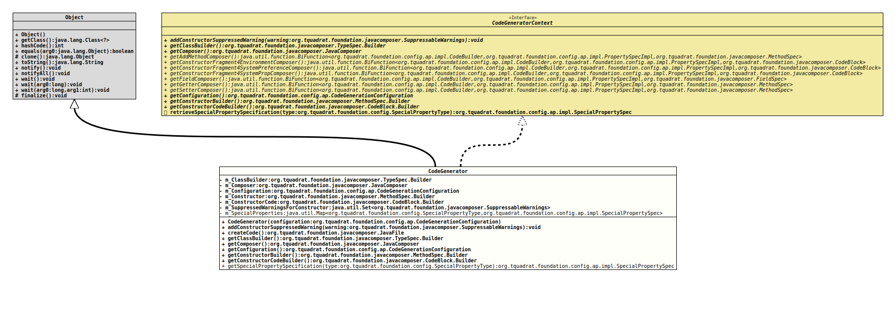

Class CodeGenerator
java.lang.Object
org.tquadrat.foundation.config.ap.impl.CodeGenerator
- All Implemented Interfaces:
CodeGeneratorContext
@ClassVersion(sourceVersion="$Id: CodeGenerator.java 1001 2022-01-29 16:42:15Z tquadrat $")
@API(status=STABLE,
since="0.1.0")
public final class CodeGenerator
extends Object
implements CodeGeneratorContext
Generates the code for the new configuration bean.
- Author:
- Thomas Thrien (thomas.thrien@tquadrat.org)
- Version:
- $Id: CodeGenerator.java 1001 2022-01-29 16:42:15Z tquadrat $
- Since:
- 0.1.0
- UML Diagram
-

UML Diagram for "org.tquadrat.foundation.config.ap.impl.CodeGenerator"
{kind=link}
-
Field Summary
FieldsModifier and TypeFieldDescriptionprivate final TypeSpec.BuilderThe class builder.private final JavaComposerThe instance ofJavaComposerthat is used for the code generation.private final CodeGenerationConfigurationThe configuration for the generation process.private final MethodSpec.BuilderThe builder for the constructor.private final CodeBlock.BuilderThe builder for body of the constructor.private static final Map<SpecialPropertyType,SpecialPropertySpec> The special properties.private final Set<SuppressableWarnings>The list of the suppressed warnings for the constructor of the new configuration bean. -
Constructor Summary
ConstructorsConstructorDescriptionCodeGenerator(CodeGenerationConfiguration configuration) Creates a new instance ofCodeGenerator. -
Method Summary
Modifier and TypeMethodDescriptionfinal voidAdds a warning to the@SuppressWarningsannotation for the constructor of the new configuration bean.final JavaFileGenerates the code from the configuration provided in the constructor.final TypeSpec.BuilderProvides access to the class builder for the configuration bean.final JavaComposerProvides access to theJavaComposerinstance that is used for the code generation.Provides access to the configuration.final MethodSpec.BuilderProvides access to the builder for the constructor.final CodeBlock.BuilderProvides access to the code builder for the constructor body.static final SpecialPropertySpecReturns the definition for the special property type.Methods inherited from class java.lang.Object
clone, equals, finalize, getClass, hashCode, notify, notifyAll, toString, wait, wait, waitMethods inherited from interface org.tquadrat.foundation.config.ap.impl.codebuilders.CodeGeneratorContext
retrieveSpecialPropertySpecification
-
Field Details
-
m_ClassBuilder
The class builder. -
m_Composer
The instance ofJavaComposerthat is used for the code generation. -
m_Configuration
The configuration for the generation process. -
m_Constructor
The builder for the constructor. -
m_ConstructorCode
The builder for body of the constructor. -
m_SuppressedWarningsForConstructor
The list of the suppressed warnings for the constructor of the new configuration bean. -
m_SpecialProperties
The special properties.
-
-
Constructor Details
-
CodeGenerator
Creates a new instance ofCodeGenerator.- Parameters:
configuration- The configuration for the generation process.
-
-
Method Details
-
addConstructorSuppressedWarning
Adds a warning to the@SuppressWarningsannotation for the constructor of the new configuration bean.- Specified by:
addConstructorSuppressedWarningin interfaceCodeGeneratorContext- Parameters:
warning- The warning to suppress.
-
createCode
Generates the code from the configuration provided in the constructor.- Returns:
- The generated code.
-
getClassBuilder
Provides access to the class builder for the configuration bean.- Specified by:
getClassBuilderin interfaceCodeGeneratorContext- Returns:
- The reference to the class builder.
-
getComposer
Provides access to theJavaComposerinstance that is used for the code generation.- Specified by:
getComposerin interfaceCodeGeneratorContext- Returns:
- The reference for the composer.
-
getConfiguration
Provides access to the configuration.- Specified by:
getConfigurationin interfaceCodeGeneratorContext- Returns:
- The configuration.
-
getConstructorBuilder
Provides access to the builder for the constructor.- Specified by:
getConstructorBuilderin interfaceCodeGeneratorContext- Returns:
- The reference to the constructor builder.
-
getConstructorCodeBuilder
Provides access to the code builder for the constructor body.- Specified by:
getConstructorCodeBuilderin interfaceCodeGeneratorContext- Returns:
- The reference to constructor body code builder.
-
getSpecialPropertySpecification
Returns the definition for the special property type.- Parameters:
type- The special property type.- Returns:
- The special property specification.
-